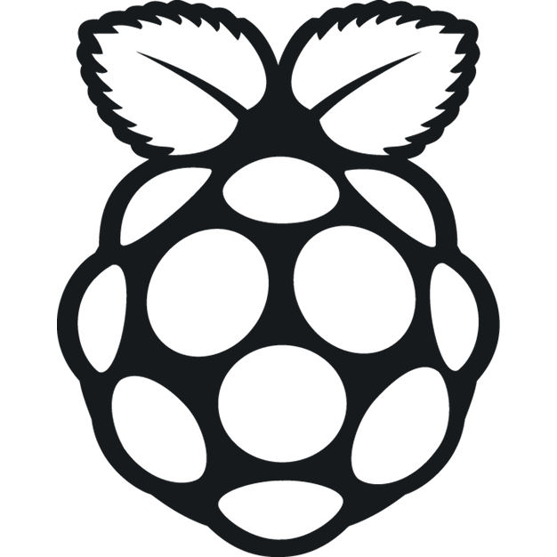
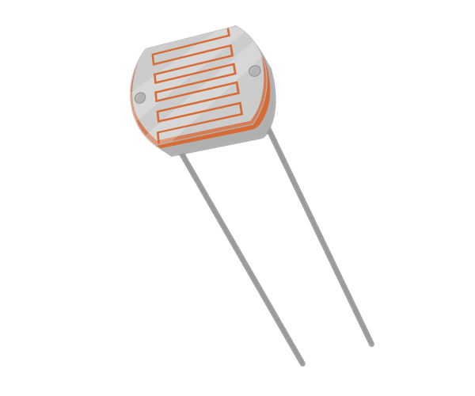
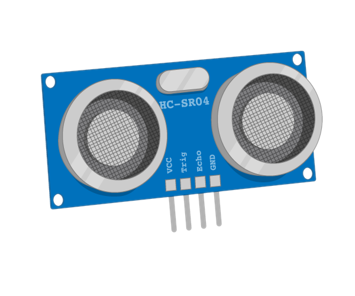
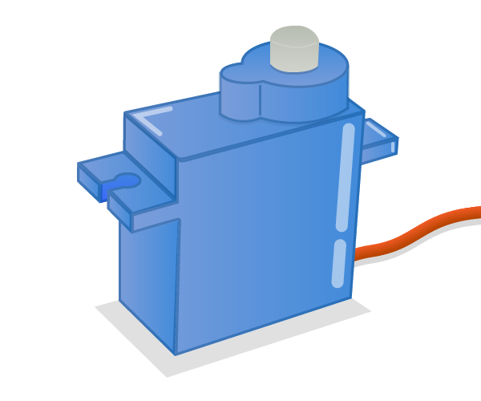

GPIO Zero
or: Designing for Education is Hard
Vital Statistics
- Name
- Ben Nuttall
- Occupation
- The Pi'd Piper of Cambridge
- @ben_nuttall
- GitHub
- github.com/bennuttall
Vitalstatistix
- Name
- Dave Jones
- Occupation
- Making scary code, so you don't have to!
- @waveform80
- GitHub
- github.com/waveform80
So, what is it?
A library that makes physical computing easy
“Physical” computing?

LED blink
import RPi.GPIO as GPIO
from time import sleep
GPIO.setmode(GPIO.BCM)
GPIO.setwarnings(False)
GPIO.setup(17, GPIO.OUT)
while True:
GPIO.output(17, GPIO.HIGH)
sleep(1)
GPIO.output(17, GPIO.LOW)
sleep(1)
from gpiozero import LED
from time import sleep
led = LED(17)
while True:
led.on()
sleep(1)
led.off()
sleep(1)
import RPi.GPIO as GPIO
from time import sleep
GPIO.setmode(GPIO.BCM)
GIPO.setwarnings(False)
GPIO.setup(18, GPIO.IN, GPIO.PUD_UP)
GPIO.wait_for_edge(18, GPIO.FALLING)
print("Don't push the button!")
from gpiozero import Button
from time import sleep
button = Button(18)
button.wait_for_press()
print("Don't push the button!")
Why?
You see things; and you say "Why?" But I dream things that never were; and I say "Why not?"
— George Bernard Shaw, Back to Methuselah
Why not?
Because you're making it too easy!
— John Q. Public, The Internet
Lesson 1:
There's no such thing as “too easy”
Query a web-page
requests
urllib
socket
But that's work, we're talking about education. It's meant to be harder!
— John Q. Public, The Internet

from gpiozero import LED
from time import sleep
led = LED(17)
while True:
led.on()
sleep(1)
led.off()
sleep(1)
from gpiozero import LED
from time import sleep
led = LED(17)
led.blink()
from gpiozero import LED
from time import sleep
from signal import pause
led = LED(17)
led.blink()
pause()
Lesson 2:
“Easy” is a continuum
Why is Python great for teaching?
do_this()
do_that()
if this:
do_one_thing()
else:
do_another()
def do_this():
return that
while True:
that = do_this()
if not that:
break
class Animal(Eukaryote):
def eat(self, food): # ...
def excrete(self, where): # ...
class Fungi(Eukaryote):
def sit_around(self): # ...
def release_spores(self, n): # ...
And GPIO Zero?
from gpiozero import LED, Button
led = LED(17)
btn = Button(2)
while True:
if btn.is_pressed:
led.on()
else:
led.off()
from gpiozero import LED, Button
from signal import pause
led = LED(17)
btn = Button(2)
btn.when_pressed = led.on
btn.when_released = led.off
pause()
from gpiozero import LED, Button
from signal import pause
led = LED(17)
btn = Button(2)
led.source = btn.values
pause()
Lesson 3:
Making things easy is hard
Dive Dive Dive!
class LED(DigitalOutputDevice):
pass
class DigitalOutputDevice(OutputDevice):
def __init__(
self, pin=None, active_high=True,
initial_value=False): # ...
def close(self): # ...
def on(self): # ...
def off(self): # ...
def blink(
self, on_time=1, off_time=1, n=None,
background=True): # ...
class OutputDevice(SourceMixin, GPIODevice):
def __init__(
self, pin=None, active_high=True,
initial_value=False): # ...
def on(self): # ...
def off(self): # ...
def toggle(self): # ...
@property
def value(self): # ...
@property
def active_high(self): # ...
class GPIODevice(Device):
def __init__(self, pin=None): # ...
def close(self): # ...
@property
def closed(self): # ...
@property
def pin(self): # ...
@property
def value(self): # ...
class Device(ValuesMixin, GPIOBase):
@property
def value(self): # ...
@property
def is_active(self): # ...
class GPIOBase(GPIOMeta(nstr('GPIOBase'), (), {})):
def __setattr__(self, name, value): # ...
def __del__(self): # ...
def close(self): # ...
@property
def closed(self): # ...
def __enter__(self): # ...
def __exit__(self, exc_type, exc_value, exc_tb): # ...
class GPIOBase(GPIOMeta(nstr('GPIOBase'), (), {})):
def __setattr__(self, name, value): # ...
def __del__(self): # ...
def close(self): # ...
@property
def closed(self): # ...
def __enter__(self): # ...
def __exit__(self, exc_type, exc_value, exc_tb): # ...
Meta-classes: why?!
Lesson 4:
Debugging is a hard skill
Challenge:
What went wrong…?
from gpiozero import Button
from signal import pause
def button_was_pressed():
print("Don't push the button!")
b = Button(21)
b.pressed = button_was_pressed
pause()
Traceback (most recent call last):
File "dont_push.py", line 8, in
File "gpiozero/devices.py", line 158, in __setattr__
self.__class__.__name__, name))
AttributeError: 'Button' object has no attribute 'pressed'
More Horror!
import inspect # OH NOES!
import weakref
from functools import wraps
from threading import Event
from collections import deque
from time import time
try:
from statistics import median
except ImportError:
from .compat import median
class EventsMixin(object):
# ...
@when_activated.setter
def when_activated(self, value):
# That doesn't sound good ...
self._when_activated = self._wrap_callback(value)
def _wrap_callback(self, fn):
if fn is None:
return None
elif inspect.isbuiltin(fn):
return fn
else:
try:
inspect.getcallargs(fn)
return fn
except TypeError:
inspect.getcallargs(fn, self)
@wraps(fn)
def wrapper():
return fn(self)
return wrapper

No boilerplate!
from gpiozero import Button
from signal import pause
def button_was_pressed(btn): # <--- mandatory parameter
print("Don't push the button!")
b = Button(21)
b.when_pressed = button_was_pressed
pause()
from gpiozero import Button
from signal import pause
def button_was_pressed(): # <--- not so mandatory parameter
print("Don't push the button!")
b = Button(21)
b.when_pressed = button_was_pressed
pause()
More WAT?
So that declarative thing …
Outputs have source
|
All devices have values
|
|
|---|---|---|
|
LED Buzzer Energenie |
LED Button LightSensor DistanceSensor |
from gpiozero import LED, Button
from signal import pause
led = LED(17)
btn = Button(2)
led.source = btn.values
pause()
from gpiozero import LED, Button
from gpiozero.tools import all_values
from signal import pause
led = LED(17)
btn1 = Button(2)
btn2 = Button(3)
led.source = all_values(btn1.values, btn2.values)
pause()
from gpiozero import Energenie, Button
from signal import pause
lamp = Energenie(1)
btn = Button(2)
lamp.source = btn.values
pause()
from gpiozero import Robot, MCP3008
from signal import pause
robot = Robot(left=(17, 18), right=(3, 4))
left_pot = MCP3008(channel=0)
right_pot = MCP3008(channel=1)
# TANK!!!
robot.source = zip(left_pot.values, right_pot.values)
pause()
from gpiozero import Energenie, MCP3008
from gpiozero.tools import booleanized
from signal import pause
heater = Energenie(1)
thermometer = MCP3008(channel=0)
heater.source = booleanized(thermometer.values, 0.0, 0.5)
pause()
from gpiozero import Energenie, MCP3008
from gpiozero.tools import booleanized
from signal import pause
heater = Energenie(1)
thermometer = MCP3008(channel=0)
heater.source = booleanized(thermometer.values, 0.0, 0.5,
hysteresis=0.1)
pause()

from travispy import TravisPy
from gpiozero import LED
from gpiozero.tools import negated
from time import sleep
from signal import pause
def status(repo, delay=3600):
t = TravisPy()
r = t.repo(repo)
while True:
yield r.last_build_state == 'passed'
sleep(delay) # don't hit Travis constantly
tl = TrafficLights(21, 20, 16)
tl.red.source = negated(tl.green.values)
tl.green.source = status('RPi-Distro/python-gpiozero')
pause()
Pin implementations
| RPi.GPIO | C, software PWM, default |
| RPIO | C, DMA-based PWM |
| PiGPIO | C, DMA-based PWM, remote pins |
| Native | Pure python, fallback |
Remote pins?!
$ export GPIOZERO_PIN_FACTORY=PiGPIOPin
$ export PIGPIO_ADDR=192.168.1.5
$ python
Runs on
|  |
Cool toys!
 |
 |
 |
|  |  |
 |
Timeline
| 14th Sep 2015 | Initial commit on GitHub |
| 15th Sep 2015 | First PR, first alpha release |
| 23rd Sep 2015 | Sprints at PyConUK |
| 28th Sep 2015 | v0.6 beta |
| 16th Nov 2015 | v1.0 released |
| 31st Aug 2016 | v1.3 released |
| 31st Aug 2016 | v1.3.1 released (oops) |
Community growth
| v1.0 | v1.3 |
|---|---|
| 200 commits | 581 commits |
| 6 contributors (2 major) | 13 contributors (3 major) |
| 103 issues (50 PRs) | 439 issues (235 PRs) |
| 0.51 issues/commit | 0.75 issues/commit |
Issue driven development
Future Development
- Support more devices
- Move default pins to PiGPIO
- Remote SPI and I2C support
- Promote zero boilerplate philosophy in other projects
GPIO Zero
- Documents
- gpiozero.readthedocs.io
- GitHub
- github.com/RPi-Distro/python-gpiozero
- Join us!
- at the sprints tomorrow
Thank You
Questions?